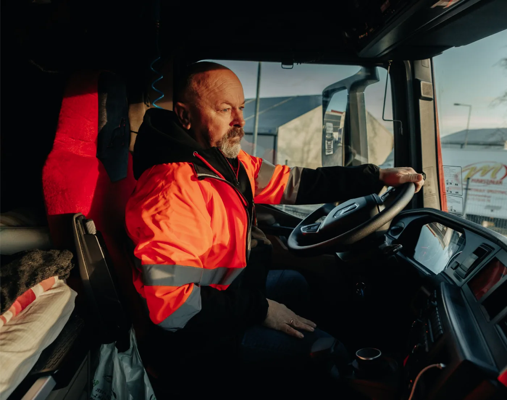
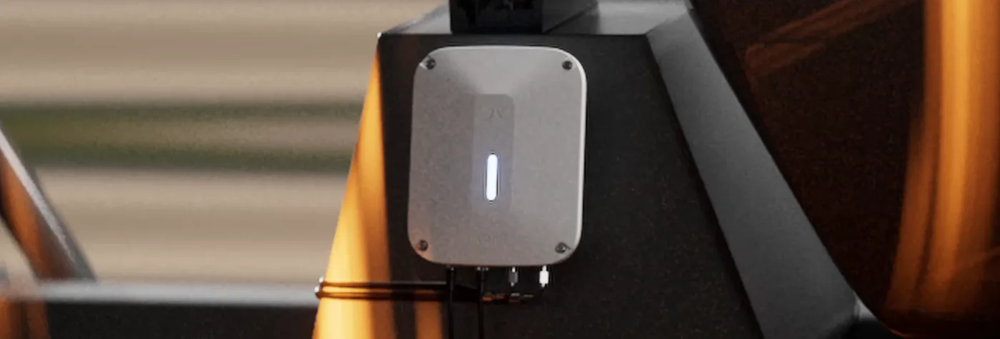
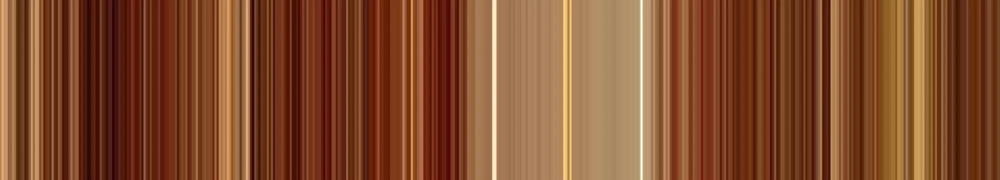
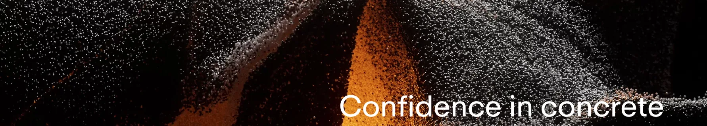

Imagery.
Real work, real light, real people. Three categories, one underlying idea, and the banded graphic that ties them together.
The horizon line

The view the whole identity is drawn from
One idea sits under everything: the line where the road meets the sky, seen from the driver’s seat. Verifi’s work happens on the road, between the plant and the pour, so the identity starts there rather than in the office.
| Where | How it shows up |
|---|---|
| The symbol | Two open strokes built on the same angle as a road meeting the horizon. |
| The wordmark | The fi ligature carries the line across the top of the word. |
| Layout | Pages split by a horizon: image above, content below, or the reverse. |
| The fifth element | A photograph stretched into bands, which reads as a road at speed. |
Three categories
- Trucks and sitesThe work as it happens. Wide, low sun, plenty of sky. No posed shots.
- HardwareThe sensor and drum unit in situ, on the truck, dirty. Not on a white background.
- PeopleDrivers, plant staff, engineers — doing something, not looking at camera.

Rounded edges on the unit become rounded edges in the interface
Do
- Shoot in real conditions, in real light.
- Let the equipment be dusty. It is a concrete truck.
- Leave room for the horizon in the crop.
Do not
- No stock handshakes, no hard hats in a boardroom.
- No heavy filters or colour grades that fight the palette.
- No people looking directly at camera.
- No product shots on seamless white.
The fifth element

Horizontal banding — the view from the driver’s side window
A photograph stretched in one direction until it reads like a road passing at speed. The starting resolution controls how coarse the bands are.
| Starting image | Result |
|---|---|
| 480 × 480 | Fine bands, most detail. Use at large sizes. |
| 160 × 160 | Medium. The general-purpose setting. |
| 40 × 40 | Coarse blocks. Use when the banding is the whole composition. |
- OrientationsHorizontal (bands run across, the side window) or vertical (bands run down, looking over the hood).
- PlacementFull-bleed, or cropped to 20% or 50% of the height.
- AlignmentThe symbol aligns to the centre of the “road” the banding creates, not to the centre of the page.
- Approved sourcesConcrete, Limestone, Oceanside, Red Sandstone, Forest.
The tagline

Confidence in concrete — set in ABC Repro Medium over imagery